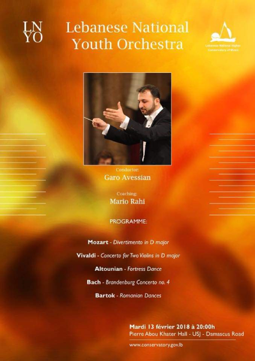
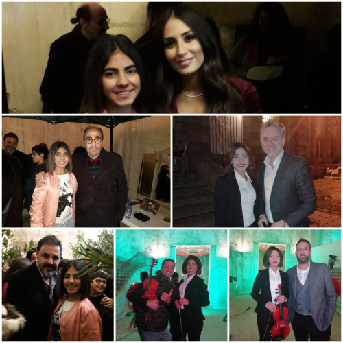

Le violon

Mon expérience
Je suis Grace Chabab, née à Beyrouth, Liban, le 12 juillet 2002. J’ai 18 ans et je suis une violoniste. J’ai commencé à étudier le violon à 7 ans avec le professeur Ibrahim Hamzi au conservatoire national supérieur de musique (Liban) puis après avec maestro Mohammad Labban. et maintenant je m’entraine avec mr Ali Hassan pour mon examen du baccalauréat. Durant mes études, j’ai joué plusieurs pièces musicales pour plusieurs compositeurs : Vivaldi, Bach, Mozart, Bruch, Beethoven, Viotti, kreutzer... En 2016, j’ai participé à un workshop présenté par « The 2016 Lebanon International String/ Orchestra Workshop-LISOW » au cours duquel j’ai expérimenté le jeu avec une orchestre pour la 1ère première fois. J’ai appris à jouer avec un groupe, chambre à musique (chamber-music), à coopérer et me concentrer sur les moindres détails. En 2017-2018, j’ai rejoint l’orchestre des élèves (Lebanese national youth Orchestra LNYO) dirigé par Garo Avessian et le coach Mario El Rahi, et on a fait plusieurs concerts parmi lesquels le concert avec Matteo El Khodor le 23 décembre 201. En 2019, j’ai participé à plusieurs auditions pour les orchestres internationaux, et j’ai rejoint l’Orchestra Excellence, j’ai participé au Festival Suoni Dal Golfo reconnu maintenant comme Lerci Musical Festival. Le festival était de 6 aout jusqu’au 28 aout 2019. Cet orchestre est composé d’environ 60 musiciens. Ce fut un plaisir de participer à ce genre d’orchestres dont j’ai beaucoup appris des techniques… De plus, j’ai gagné le premier prix du talent show des écoles-USJ et j'ai reçu un niveau excellent de l'organisation libanaise pour le developpement avec la cooperation du Ministère d'éducation MEHE.
Voici quelques photos et vidéos :
audition à Saida
Le concert The 2016 Lebanon International String/Orchestra Workshop - LISOW
video clip avec Marwan Khoury
c'est le 1er concert avec l'orchestre LNYO
concert le 2 juillet 2018 à 8:30, St. joseph Church,Monot
concert le 28 fevrier 2019
concert 25 mars 2019 avec youth choir
concert le 2 juillet 2019
Audition: orchetre des jeunes de la méditerannée(orchestre de Provence)
Concert no 1 avec khaled Mouzanar
rehearsal for the first concert with Orchestra Excellence and Khaled Mouzanar in San Terenzo - Lerici
10 Aout 2019, concert en ouverture du Festival Suoni dal Golfo à Lerici - Italie.
khaled Mouzanar - piano
Mario Stephano Pietrodarchi - Bandoneon/accordeon
Anastasiya Petryshak - violon
Rasha Rizk - vocal
plus de soixante-dix musicians et solistes sur scène sous la direction de Gianluca Marciano.
concert numero 2 avec l'orchestre excellene au festival Suoni dal Golfo
photo prise après le 4ème concert Orchestra Excellence
avec le virtuoso violoniste Sergey krylov
Orchestra excellene, Tellaro-Italy
concert numero 6 a Lerici avec Aleph et 8ème art
Final concert-Lerici(nb 10)
rehearsal Mozart Requiem in D minor avec l'orchestra excellene
moi quand j'étais petite
moi et les célébrités
al watan vidéoclip avec Assi El Hallani
promo 2020 Performance
Voici quelques morceaux, Pièces de violons à écouter :
- Bruch violin concerto in G minor
- Sibelius violin concerto in D minor
- Tchaikovsky violin concerto in D major
- Beethoven romance in F major
- Paganini violin caprice no 24
- Bach chaconne partita 2